AnyPortrait > マニュアル > IK設定
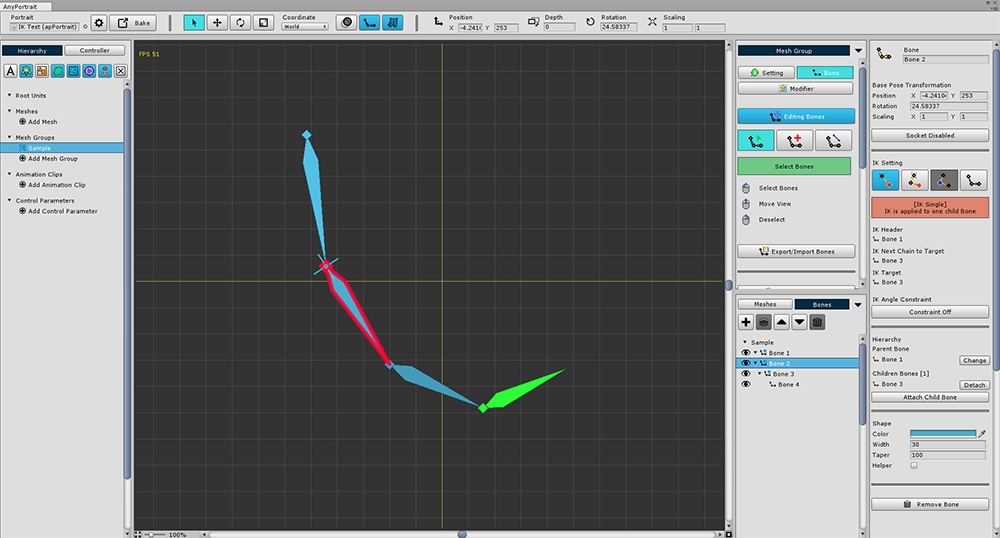
ボーンをコントロールするときは、基本的にボーンを回転させてコントロールします。
一方、ユーザが1つのボーンを動かすと、他のボーンが自動的に回転することがあります。
この方法は「IK(Inverse Kinematics)」と呼ばれています。
IKは、直感的なコントロールを可能にします。
AnyPortraitは (1) 「エディタでの編集のためのIKを制御する機能」と (2) 「ゲームで呼び出すことができるIK機能」を提供しています。
このページでは、IK有効とエディタで使用する方法について説明します。
IKが有効になってボーンをゲームで使用するスクリプトは、関連ページで見つけることができます。
ボーンIKを設定する前に、ボーンの詳細情報UIについて説明します。
ボーン情報UIは、3つのタブに分かれています。
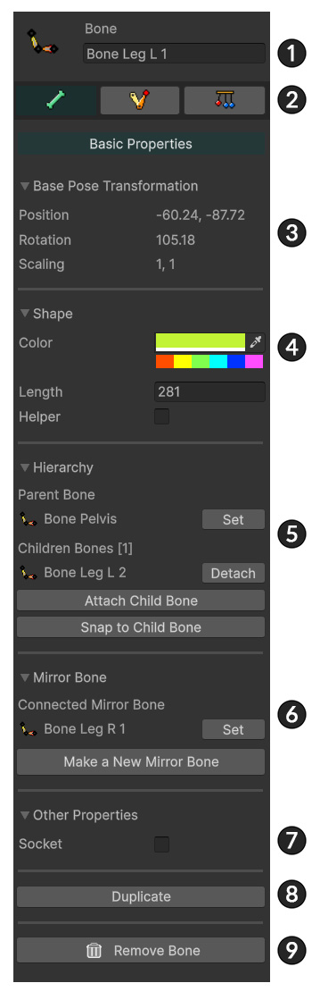
共通オプションおよび「Basic Properties」タブの画面です。
1. Name : 名前を設定します。
2. サブタブ : ボーンのプロパティUIを種類ごとに分類したタブです。
3. Base Pose Transformation : 基本的な位置、回転、スケールの値を設定できます。
4. Shape : エディターに表示される形状と色を設定します。「Helper」オプションにチェックを入れると、ボーンの位置のみが表示されます。
5. Hierarchy : ボーンの親子関係情報を表示し、変更することもできます。「Snap to Child Bone」を押すと、ボーンの端が子ボーンに吸着します。
6. Mirror Bone : このボーンと対称に動作するボーンを設定できます。
7. Other Properties : ソケットなどのその他のプロパティを設定します。（関連ページ）
8. Duplicate : ボーンを複製します。
9. Remove Bone : ボーンを削除します。
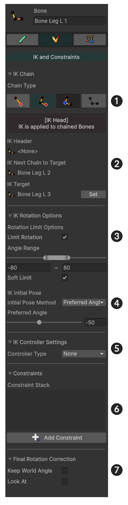
「IK and Constraints」タブの画面です。
このページで解説するUIは、このタブで確認できます。
1. IK Chain Type : IKチェーンの種類（Single、Head、Chain、Disabled）を変更します。
2. IK Chain接続情報 : IKチェーンの開始や終了、次に接続されているボーンなどを確認でき、IKチェーンのターゲットを変更できます。
3. Rotation Limit Options : IK計算時に適用される回転制限の範囲を設定します。（関連ページ）
4. IK Initial Pose : IK計算時に参照される初期ポーズを設定します。
5. IK Controller Settings : 常時動作するIKコントローラーを設定します。（関連ページ）
6. Constraints : ボーンのトランスフォームを制限する制約を追加・設定します。（関連ページ）
7. Final Rotation Correction : IKの最終段階で、ボーンを追加的に回転させるオプションです。（関連ページ）
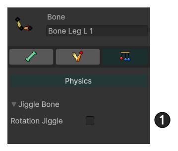
「Physics」タブの画面です。
1. Jiggle Bone : 慣性によって動く「ジグルボーン」を設定します。（関連ページ）
このIKの設定を専門的に扱うときは、多くのオプションが必要となり、難しい場合があります。
AnyPortraitはIKを迅速かつ簡単に行うために、「IKチェーン(IK Chain)」と「IKモード(IK Mode)」の方法を提供しています。
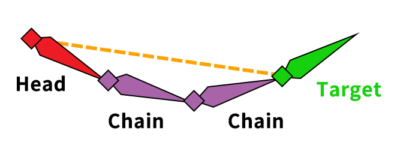
IKチェーンの概念図です。
IKチェーンは「Head、Chain,、Target」で構成されます。
IKは「Head」のボーンを出発点とし、「Target」のボーンの位置まで計算されます。
IKチェーンの場合、ボーンは4つのIKモードのうちの1つを有する。
1. Single : これは「Chain」なく「Target」のみの「Head」の状態です。これは、子のボーンがあるすべてのボーンのデフォルト値です。
2. Head : これはIKチェーンの出発点です。
3. Chain : IKチェーンの中間ボーンの状態です。「Head」と「Target」の間のすべてのボーンは、「Chain」モードに強制されます。
4. Disabled : IKチェーンがありません。子のボーンが存在しないか、ランダム指定された場合に、このモードが設定されます。
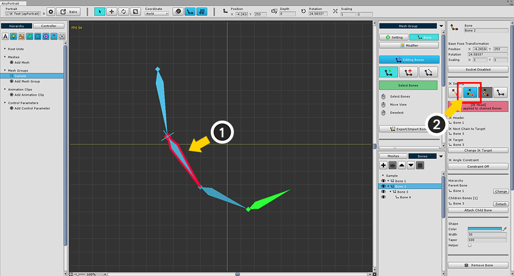
IKチェーンを作成するには、
(1) ボーンを選択して、
(2) IKモードを「Head」に変更します。
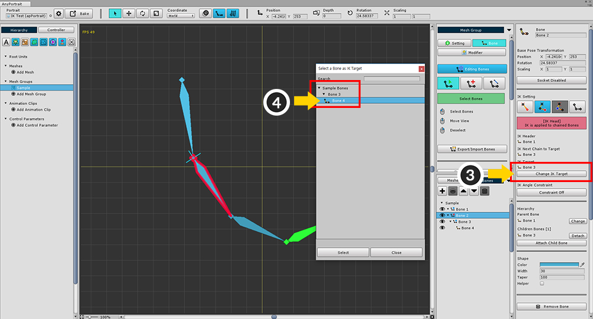
(3) 「Change IK Target」ボタンを押して、(4) 対象となるボーンを選択します。
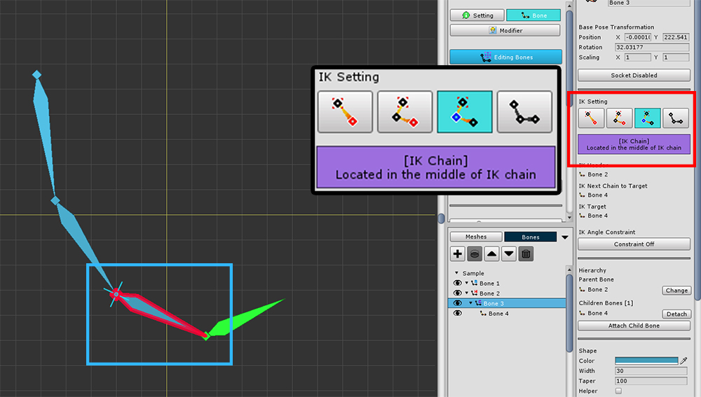
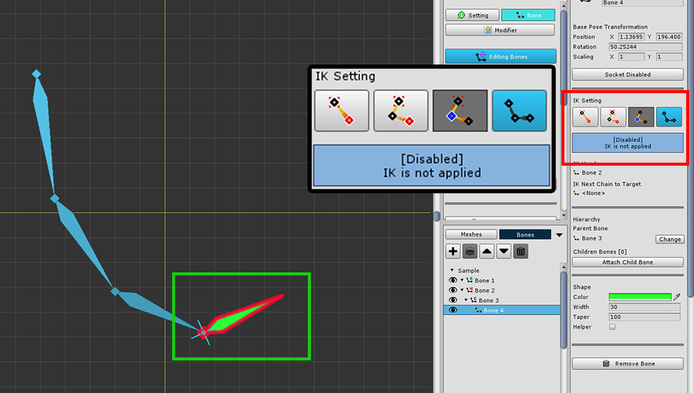
IKチェーンが作成されると、中間のボーンは、自動的に「Chain」モードに変更されます。
ターゲットのボーンは、IKチェーンの影響を受けません。
(現在選択されて、ボーンは、子がないので、「Disabled」モードであり、他の新しいIKチェーンを構成することもできます。)
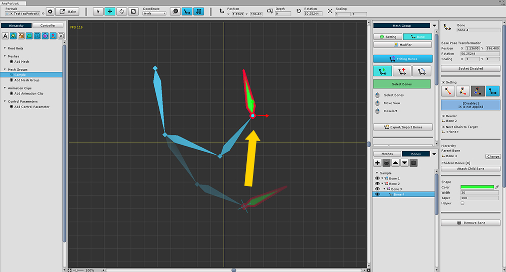
IKチェーンを使用すると、ボーンを移動したとき、チェーンのボーンが自動的に回転することを見ることができます。
(ボーンの編集、モディファイヤとアニメーションで確認することもできます。)
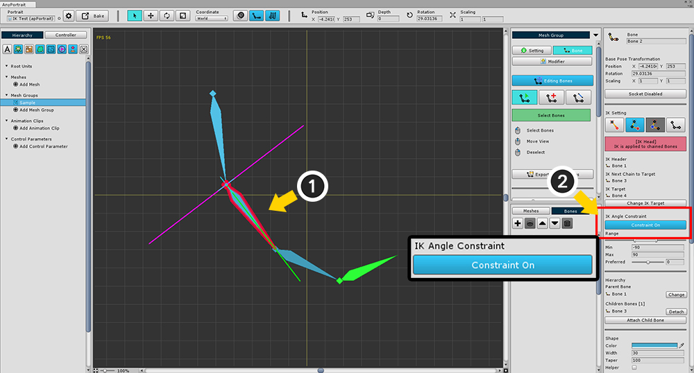
IK計算では、ジョイントに応じて角度を制限することができます。
回転角度を制限する機能を使用する方法は次のとおりです。
(1) ボーンを選択します。
(2) 「Constraint」ボタンを押して 「Constraint On」状態にします。
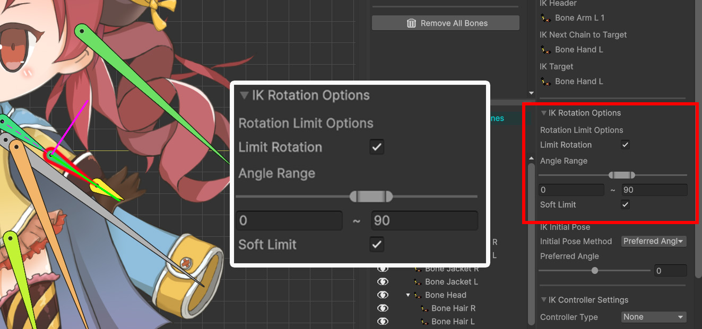
「AnyPortrait v1.7.0」にて、UIの配置や用語が変更されました。
「IK Angle Constraint」項目は、「IK Rotation Options」内の「Rotation Limit Options」項目に変更されました。
角度を制限する項目の名称は「Limit Rotation」となり、チェックボックス形式のUIに変更されました。
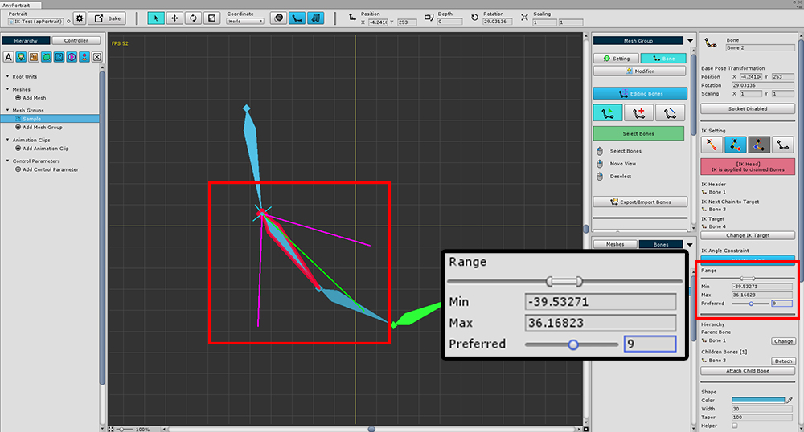
回転限度の範囲を設定します。
「Min」と「Max」の値を使用して限界範囲を設定することができます。
「Preferred」の値は、IKの計算式の基礎となる角度です。
角度制限があるボーンを画面上で直感的に見ることができます。
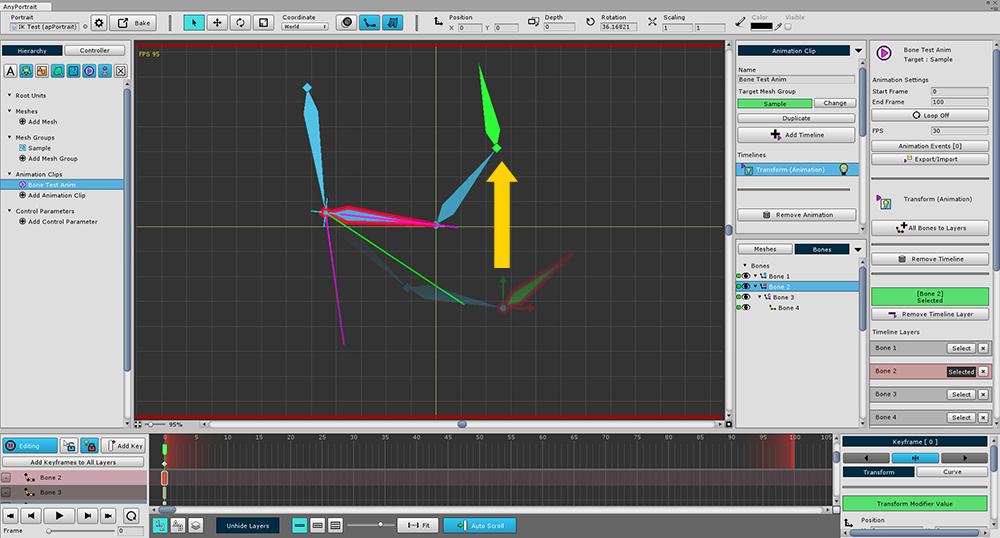
IK角度の制約が動作するのはモディファイヤやアニメーションで見ることができます。
(注：回転変形値を制限する機能であるため、メッシュグループの「Bone」タブの画面では、テストすることができません。)
モディファイヤやアニメで作業するとき、上記の画面のように角度制限IKが実行されることを確認することができます。
この設定は、ゲームにも適用されます。
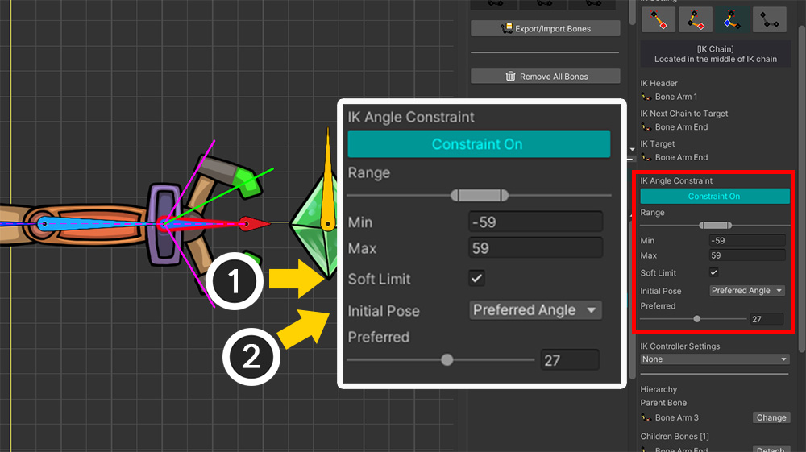
IK角度制限に関するオプションが追加されました。
1. 「Soft Limit」は、「回転角度制限」を少し緩く適用することで、ボーンが自然に動くようにするオプションです。
2. 「Initial Pose」は、IKの操作が最初に参照するポーズのオプションです。
これらのオプションは、IK方式が「FABRIK」に設定されている場合に機能します。 （関連ページ）
詳しくは、次のマニュアルを参照してください。
- 意図したとおり、IKが動作するように誘導
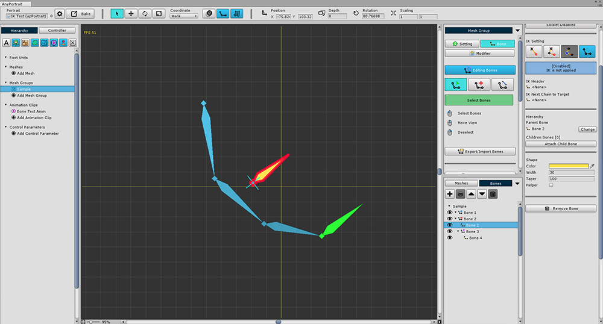
IKを適用しない場合があります。
以下の場合、親ボーンはIK連鎖関係には関係しません。
- 親のボーンがない場合
- 親ボーンが「Disabled」モードにある場合
- 親ボーンがIK鎖を有するが、別の子ボーンに標的化されている場合
上の写真は、親ボーンがIK鎖を有するが、IK鎖が他の子供ボーンのために形成されるため、IK鎖が形成されないことを示している。
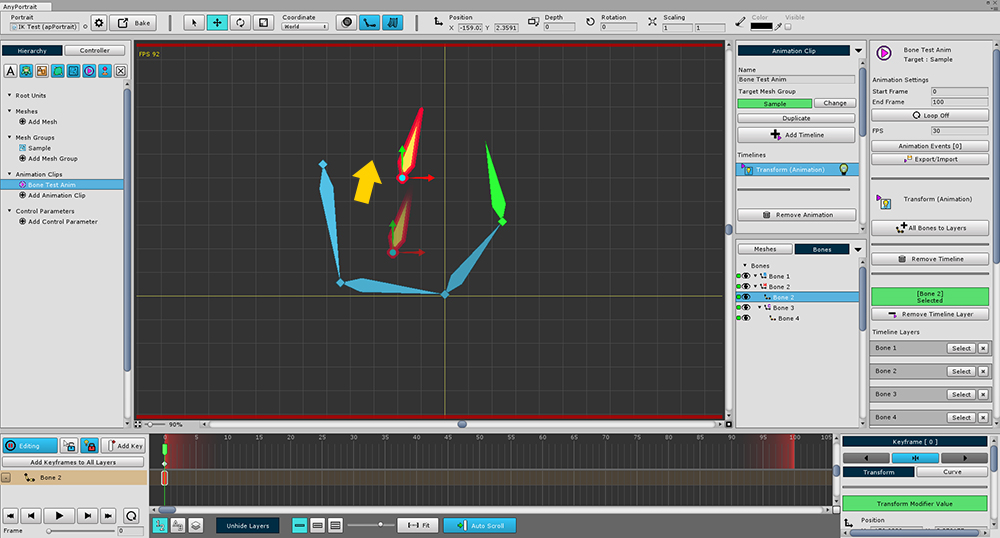
IKが設定されていない場合、親のボーンは回転しません。